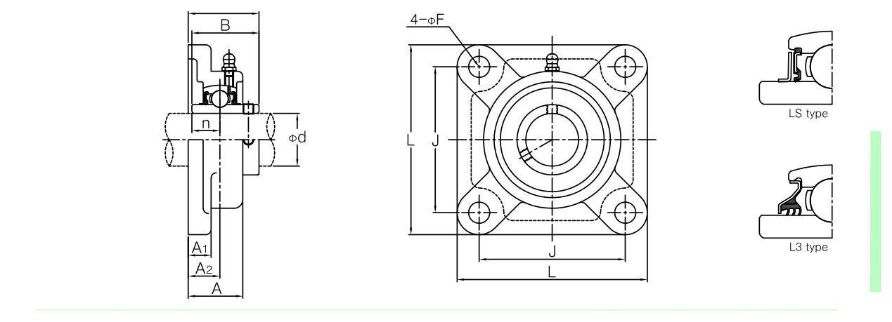

Plastic Bearing Units · F Series
하우징을 엔지니어링 플라스틱(폴리에틸렌 등)으로 제작한, 볼트 구멍 4개(사각) 플랜지로 벽면·수직면에 고정하는 유닛입니다. 주철(일반 UCF) 대비 무자성·내식성·경량이 장점입니다.
형번 또는 치수 일부만 입력해도 검색됩니다.
형태 참고용 도면 — 표준 UCF 사각 4홀 플랜지와 동일한 하우징 구조이며, 재질만 엔지니어링 플라스틱입니다.

아래 표의 d(축경)·L(사각변)·J(볼트간격)·A1(베이스두께)·A(플랜지두께)·N(볼트구멍지름)·T(슬리브폭)·B(베어링폭)·S1(볼트구멍폭)에 해당합니다. 도면 기호는 원 출처 표기로, 아래 표 기호와 1:1로 대응하지 않을 수 있습니다.
| 형번 | 축경(d) | 사각변(L) | 볼트간격(J) | 베이스두께(A1) | 플랜지두께(A) | 볼트구멍지름(N) | 슬리브폭(T) | 베어링폭(B) | 볼트구멍폭(S1) | 중량(kg) |
|---|---|---|---|---|---|---|---|---|---|---|
| F204 (UCF204PSS) | 20 | 86 | 63.5 | 13.4 | 27.8 | 11 | 33.3 | 31 | 12.7 | 0.29 |
| F205 (UCF205PSS) | 25 | 95 | 70 | 14.5 | 28 | 11 | 35.8 | 34.1 | 14.3 | 0.5 |
| F206 (UCF206PSS) | 30 | 107 | 83 | 14.5 | 31.5 | 11 | 40.2 | 38.1 | 15.9 | 0.74 |
| F207 (UCF207PSS) | 35 | 117 | 92 | 16 | 34.8 | 13 | 44.4 | 42.9 | 17.5 | 0.74 |
| F208 (UCF208PSS) | 40 | 129 | 102 | 17 | 36.5 | 14 | 51.2 | 49.2 | 19 | 0.97 |
단위: mm
※ 위 표는 당사 SWS 카탈로그에 치수 자료가 없어, 해외 제조사·유통사의 공개 자료(Miniature Bearings Australia의 P204PE·P205PE·P206PE 제품 페이지, MOVET의 PPL 플라스틱 하우징 공식 데이터시트, Felstrom의 플라스틱 하우징 유닛(UCF2..PSS·UCFL2..PSS) 공식 데이터시트, 표준 UC200계열 인서트 베어링 치수)를 기준으로 작성했습니다. 확인하지 못한 치수는 추정하지 않고 “문의”로 표기했습니다. 정밀 가공·발주 전에는 반드시 견적 문의로 최종 치수를 확인하시기 바랍니다.